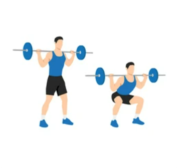
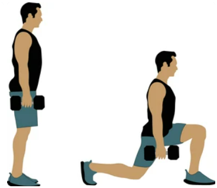
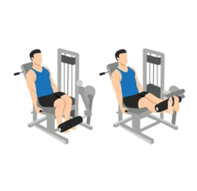
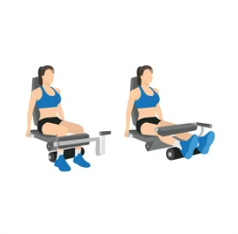
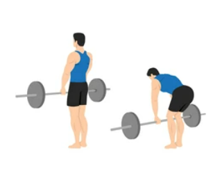
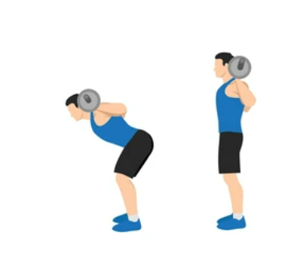
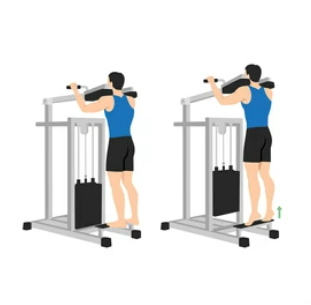
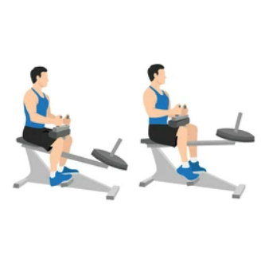
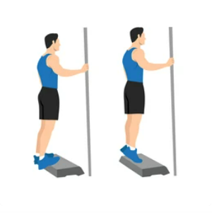

Stegna
Počepi (Squats)

Postavite se vzravnano, noge naj bodo nekoliko širše od širine ramen. Počasi se spustite v počep, kot da bi se usedli na neviden stol. Pazite, da kolena ne presegajo prstov na nogah in ohranjate raven hrbet. S pomočjo mišic stegen se potisnite nazaj navzgor v stoječ položaj. Ponovite za želeno število ponovitev. Pri izvajanju počepov lahko uporabite tudi dodatno obtežitev, kot so uteži ali palica na hrbtu, za povečanje intenzivnosti vadbe.
Izpadni koraki (Lunges)

Postavite se vzravnano, nato naredite velik korak naprej s eno nogo. Spustite se, dokler se sprednje koleno ne upogne pod pravim kotom, pri čemer ohranjate ravno hrbtenico. Nato se z drugo nogo potisnite nazaj v stoječ položaj. Ponovite na drugi strani z drugo nogo. Nadaljujte izmenično izvajanje korakov. Pri izvajanju izpadnih korakov lahko uporabite uteži v rokah ali pa izvajate izpadne korake nazaj za dodatno raznolikost.
dvigi noge(Leg extensions)

Osredotočite se na mišice kvadricepsa. Dvignite noge s pritiskom na blazine naprave. Med dvigovanjem nog pazite, da ohranjate pravilno držo in izvajate nadzorovano gibanje. S pomočjo kvadricepsnih mišic iztegnite noge, dokler se kolena ne zaklenejo, in zadržite to pozicijo za trenutek. Nato počasi spustite noge nazaj v začetni položaj, dokler se kolena ne skrčijo pod pravim kotom. Ponovite za želeno število ponovitev.
Zadnja loža
Leg Curl Machine

Sedite na napravi za upogibe nog. Pritrdite noge pod oblazinjenim valjčkom. Začnite z nogami iztegnjenimi pred seboj. Počasi upognite noge, dvigujte težo s pomočjo hamstringov. Zadržite vrhunec gibanja za trenutek, nato počasi spustite noge nazaj v začetni položaj. Vzdržujte nadzorovano gibanje skozi celotno vajo.
Romunski Mrtvi dvig(Romanian deadlift)

Postavite se pokončno, noge naj bodo nekoliko širše od širine ramen. Dvigalo za uteži ali palica naj bo pred vami na višini stegen.Začnite z ravnim hrbtom, ramena potisnite nazaj in prsni koš rahlo dvignite. Kolena naj bodo rahlo pokrčena. Zadržite to začetno držo skozi celotno vajo. Počasi se nagnite naprej v kolčnih sklepih, hkrati pa rahlo potisnite zadnjico nazaj. Spustite palico proti tleh, vse dokler ne čutite raztezanje v zadnji loži.Pritiskajte pete v tla, medtem ko se dvigujete, in ohranjajte nadzor nad gibanjem. Zgornji del telesa naj ostane raven, dokler ne dosežete pokončnega položaja.
Dobro jutro(Good Morning)

Postavite se pokončno, noge naj bodo nekoliko širše od širine ramen. Roke lahko položite za glavo ali jih držite prek prsnega koša. Počasi se nagnite naprej v kolčnih sklepih, hrbet naj ostane raven. Nagnite se, dokler ne čutite raztezanje v zadnji loži. Nato se počasi dvignite nazaj v pokončen položaj. Pomembno je, da ohranjate raven hrbet in izvajate gibanje nadzorovano.
Meča
Stoječe dvigovanje na prste(Standing calf raises)

Postavite se pokončno s stopali v širini ramen. Roke lahko položite na boke ali držite uteži ob straneh. Počasi se dvignite na prste, stiskajte meča in se povsem dvignite, tako da ste na vrhuncu gibanja. Zadržite to pozicijo za trenutek, nato se spustite nazaj na začetno pozicijo. Pomembno je, da gibanje izvajate nadzorovano in ohranjate stabilnost telesa skozi celoten obseg gibanja.
Sedeče dvigovanje na prste(Seated calf raises)

Sedite na klopi ali stolu z nogami rahlo upognjenimi pod kotom 90 stopinj. Stopala naj bodo rahlo širše od širine ramen. Položite uteži na stegna ali pa držite uteži ob straneh. Počasi se dvignite na prste, stiskajte meča in se povsem dvignite, tako da ste na vrhuncu gibanja. Zadržite to pozicijo za trenutek, nato se spustite nazaj na začetno pozicijo. Poskrbite, da ohranjate pravilno držo hrbta med izvajanjem vaje.
Dvigovanje na prste s pomočjo stopnice(Calf raises on a step)

Postavite se na stopnico ali povišano platformo, tako da so pete v zraku, medtem ko so prsti nog na stopnici. Roke lahko položite na boke ali pa držite uteži ob straneh za dodatno obremenitev. Počasi se dvignite na prste, stiskajte meča in se povsem dvignite, tako da ste na vrhuncu gibanja. Zadržite to pozicijo za trenutek, nato se spustite nazaj na začetno pozicijo, kjer so pete pod stopnico. Pomembno je, da ohranjate nadzor nad gibanjem in se osredotočite na aktivacijo meč.
 Močno Telo
Močno Telo